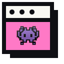

1
Choose a bookmark folder
Select a saved Chrome bookmark folder from the popup.

A simple workflow for research, learning, shopping, and any browser session with too many tabs.
Select a saved Chrome bookmark folder from the popup.
Click once to open supported URLs into a named tab group.
Sort current tabs by website. Groups first, loose tabs last.
Save supported sessions locally and restore them when needed.